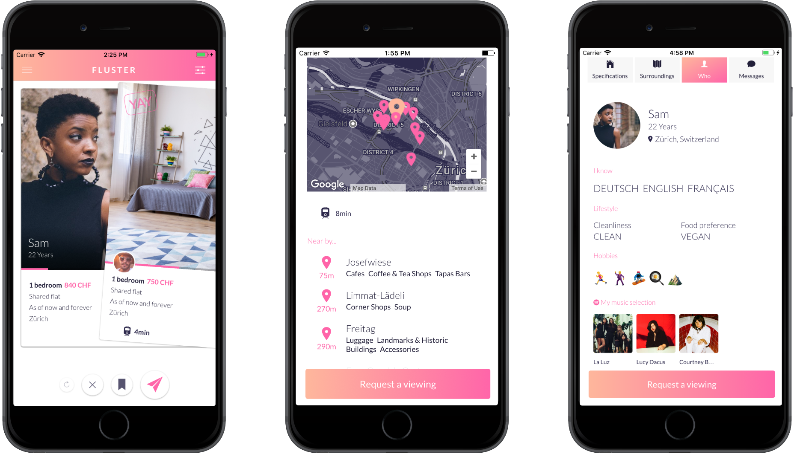

Why did I choose Ionic and
why I'm glad I made that decision
BärnerJS Talks #5, Tuesday, June 26, 2018

Overview
- Project's goal
- My journey, why Ionic?
- Same choice today?
- In the mirror
- Ionic's future
- Demos
Fluster a marketplace for rooms and roommates with plenty of unique features which makes life easier
#Spoiler
The following summarize my experience and my point of view
Native Android app
- Slow learning curve
- Material design...yes but how?
- At the end it was still Java and hacks
So, what were my options...
React Native
To be honest, I didn't knew where to begin
NativeScript
- Not a big fan of GUI editor
- And what about the web?
Xamarin
Freemium then bought by Microsoft
Ionic
- Free and open source
- Documentation and books
- Community
- Web technologies
- Fast learning curve
- Lot of libs and plugins
- Angular
- Typescript
Cool, but would I do the same choice today?
Native
Hybrid
Of course I would still pick Ionic
For the same reasons | For the future
Ionic's future
- Progressive Web App
- Improve performance
- Frameworks agnostic
StencilJS
Logo
Capacitor
Logo
- Progressive Web App
- Improve performance
- Frameworks agnostic
DEMO
import { AlertController } from 'ionic-angular';
@IonicPage()
@Component({
templateUrl: 'demo.html',
selector: 'demo'
})
export class Demo {
constructor(private alertCtrl: AlertController) {
}
ionViewDidEnter() {
this.presentAlert();
}
presentAlert() {
let alert = this.alertCtrl.create({
title: 'DEMO',
subTitle: 'Cool?',
buttons: ['Cool cool cool']
});
alert.present();
}
}